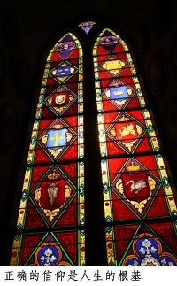

从心灵的真诚开始
问：你常说时间比金钱宝贵得多，但为何你常主张“发呆”?
答：看不惯没有目标无所事事的人，或没有用心，效率很低的人。既然花相同时间为什么不用心把事情做好，非得打混磨时间？也看不惯有人假装勤奋，瞎忙，做事不得法，时间管理不善，把自己和別人搞得昏头暗地，好像这样才显得出他的成就，事业做多大似的……
我喜欢留有个人独处的时间和空间，表面上什么也不想，其实是在沉淀思想、整理思绪。三年前我在大陆一个城市呆了一阵子，每天傍晚，跑步到湖边公园，夜幕降临的时候，坐在公园内半圆形的露天剧场台阶上，一个人祷告，或者白天在阳台上看书，一边看看湖面上白鹭起舞。有时，我到居所后面爬山，说是爬山，常常是跑步上山。很怀念那一段日子，不开会，不接电话，也不赶时间，甚至没有任何饭局（在大陆不是常要应酬饭局吗？）几乎没有人知道我去了大陆，谁也不打扰。
很多家长容不得孩子“清閒”一下，特別是準备申请大学之前，拉着孩子四处看学校，拜访校友，咨询“专家”，参加Portfolio Day……我总说，如果在11年级之前没有做这些事，那么就不要做了，待学校录取后再去看学校。空閒下来的时间不如让孩子好好休息，睡睡好觉，头脑保持清晰，效率提升，节省时间。很多家长采纳我的建议，后来都说效果很好。
有些年轻人，老板给的假期不好好休息，昏天暗地地扎Party，到上班时间昏头转向，三天两头生病请假。好在莎伦画院的年轻员工都比较自制。我跟他们说；“现阶段你最重要的是两件事，照顾好身体和储蓄钱。只有这两件事做好，才有未来可言。若有人抱怨老板要求高，或为何工作不保，想想自己的工作态度，否则换多少工作都一样。
问：我做事、学习从没有想过态度，为什么刘老师和莎伦画院的老师总强调“态度“？
答：从心而起，表流的态度是一切言行的背后动机。一个人可以作假一时，他的态度瞒不了一世。先反省你的态度，凡事就能真正自我要求，做到精致。
问：刘老师很会看人用人？
答：看人的“态度“，而不看他是否做错，是否还不会……一个人无意中的一个眼神，决定了我是否完全信任他、重用他、培养他……就一个眼神，对方自己都不知晓，常常因此改变一个人的命运！有人因此完全出局，也是某个不经意的偶然，一个不经意的眼神，让我做出最后的判断。
问：眼神那么重要？
答：当你有那种解读能力时，“眼神是心灵的窗户”。我决定要不要接受某个学生时，看的不是他曾经学过多久，画的好不好……而是他（她）的眼神！选择员工、老师和经理也一样。有些人的眼睛真诚、执著、聪慧……
问：会不会看错人？
答：如果在一开始就有点怪怪，那么结果也就证实有问题。否则很準确。我想这类人似乎有一种“特异功能”，没法学习。

问：你主张态度端正，又讲求随性自然，是否有矛盾？
答：今天看到一则新闻，越来越喜欢新州州长克利斯蒂。前几天在记者会上称一名记者是“白痴”，认为该记者问问题不经大脑，今天又被爆料在泽西海岸和一名选民口角冲突。据说，身穿蓝色休閒衬衫，拿着冰淇卷筒的州长，向一名身份不明的路人大喊：“你真了不得！你真了不得！闭上你的嘴！”该路人批评州长的教育政策，满口脏话，州长发怒：“走开，走你的路。”
不得了，政治人物如此公然侮辱民众，还如此没有教养，给民众不好的示范，如果在大选期间，一定让他死不翻身。好在克利斯蒂早已放弃竞选总统。不当总统也罢，如果只是为了私欲、名声、面子而当总统，一言一行都在做戏，连公布个移民新政策都是为了拉选票竞选连任，不是出卖国家利益是什么？这种人为什么反而没有人去抨击？
克利斯蒂实在太可爱了，他没有政治人物的做戏（虽然知道选民只吃这一套），也没有公众人物的亲和（尽管那一套大多是假像），我并不是赞同他骂大街，不懂克制，但更重要的是他真实！一个真实的州长一心一意着急要把事情做好，遇到走公式、做表面、低效率的体制不急死才怪。
要我说，懒都懒得与这些人争执，浪费的不仅是自己的口沫和时间，浪费的是纳稅人的金钱、办事的效率和国家的资源。要做绅士淑女很容易，全民看了都顺眼，所到之处夹道欢迎，（都是追求表面，容易受骗，浪费时间和资源的傻瓜，才会去为虚假的公众人物抬轿子）。政治人物当绅士淑女和好好先生换来的是体制日益衰落和腐败。
有人跟我说：“不要停止去教会集会。”我想圣经还说呢：要用心灵和诚实敬拜神。如果没有能吸取营养、养分的教会，我宁可不去。有人又说：“（有一点名气的人）应该去集会，为教会做面子。”是啊，常有牧师或教友自豪地说XX名人也是我们教会的。只是，第一我没有那么大的面子，第二在暂时不能顾全灵性营养吸收及顺从心灵与诚实的情况下，我宁可遵从真实，而不愿假惺惺地坐在那里打瞌睡。何况，教会就在我的心里！
当然一定也会有人说身为教师，不可在公众场合和博客上说些“出格”的话。所谓不出格就是党八股和民八股上四平八稳，谁都不得罪的东西，好容易轻轻挠挠，也不痛不痒。我受够了这种永远不能解决问题的作风。
作风源自态度，态度源由内心！所以，我们讲究凡事从内在心灵更新，丰富与充实。只要内在改变了，外在和一切所言所行自然跟上来，不需要在特定场合说、做特別的话和事，活着才不会太辛苦。
内在不端正，外在随性的东西一定不健康：贪欲、私欲、情欲……毁坏自己也污染社会。
问：为什么有些艺术作品看了没有美感，反而害怕？
答：随意随性是有原则界限与情绪克制的。
有学生经过学习训练后，展现出非凡的才能，她不仅画卖得极好，网站也极受欢迎，甚至有商家在她的个人网站上放广告。但后来，我们不鼓励其他学生看她的网站。因为越来越流露出乱性、血腥、暴力……年轻人喜欢跟从，没有分辨与自制能力。
尝试与这个已经毕业了的学生多接触，在思想、生活、经济资助，关怀帮助她，但她总是一副回避的姿态。希望她能够找到积极向上乐观的信仰力量，把她的才智运用到得益自己和影响他人的益处上，而非越来越沉沦到心灵痛苦甚至堕落的境地，还自以为前卫潮流，带领一批年轻的追随和崇拜者。越有追随者，制造的污染就越大。
有艺术天分者，大多敏感，爱“无病呻吟”，有个学生跟我说谁谁是大设计师自杀了，谁谁又是大画家也自杀了，好像她享受沉迷在忧郁状态里是理所当然的，我一直开导她：我们的生命是上帝创造，天赋才能也是神给的，一定有关于我们生命的计画。我相信我们要影响和带领他人走向光明与荣耀，不可让一切黑暗势力侵入我们的思想。我介绍她和她的父母看Joel Osteen牧师的美国畅销书Your Best Life Now（有中、英文版）。在我的信仰道路上，如果说上帝通过赵墉基牧师的信念给我添加巨大的信心，那Joel Osteen牧师的著作则影响我成为一个更加乐观有奉献思想的基督徒，学会从正面看问题。
我的成长之初，情绪充满低迷与消极，好在我找到写作发洩思想情绪，而没有在其他方面出格。记得有次有个编辑跟我说，我的诗和当代著名诗人顾城的诗发表在同一版面……当时我还年幼。十多年后，顾城在澳洲杀人且自杀了，一代大诗人就此陨落。
成为基督徒以后，我不再写伤感忧郁的文字，坚信：文学艺术必须传播爱、关怀、美好、积极、自信、向上！否则没有存在的必要。
在欧洲，早期教堂显现的建筑、绘画、雕塑都为敬畏、荣耀创造主，虔诚之心每每令我动容。
年轻人在人生摸索之中，以艺术作品表现出迷惘、困惑、恐惧、害怕……是无可非议的。申请大学的Portfolio当中，也必须表现申请者内在的思想和对事物内在的理解，以及对结构的瞭解……艺术化的东西，看在一般人眼中，因不理解不懂而以为不美。举个例子，画叶子之美，不应该只是画光滑的叶子表面，而应该画叶子的内在叶脉，一般人就接受不了。
但到了一定年纪，越来越沉迷，甚至夸大个人的伤感消极情绪就应该注意。有些流行艺术看得出来作者已经被黑暗势力所控制，成为散布极端思想的工具。
做父母的必须切切为孩子祷告，祈求上帝保持我们的孩子有慎守的心！
在好莱坞电影圈、歌坛、时装模特儿界、动漫设计圈……这些年轻人向往的地方，也是莎伦画院很多学生大学毕业后的去处。很多家长害怕孩子被坏风气带坏，而我常祷告的是：我们的孩子进入这些行业，是神的计画，是为了在那些地方树立基督的旗帜，不须害怕！原好莱坞金发女星Stormie Omartian曾经沉迷於毒品和性欲，后来成为以音乐、书籍传道的基督教传道人，她的畅销书《如何为你的丈夫（孩子）祷告》等书籍深入人心，许多作品获得影视、音乐大奖，她的成就、才华和经历影响了千千万万的人。
问：莎伦画院主张通过绘画调整和训练学生的品格。但我是很实际的，只要把我的孩子画画教好，加分进入好大学就好了，其他的我不在乎……
答：莎伦画院是一间有理念的私立学校，既然家长要送孩子来此学习，我们就会按我们的理念教导学生。不仅只是加分进好大学，更重要的是从小个性品格的培养，一切源由内心。一棵树要它长得好，枝繁叶茂，一定是从选苗和肥土开始。一些亚裔学生进了名校后容易出事情，大凡和家庭只注重结果（进名校），不注重过程有关系。
当然，家长可以依自己喜好选择是不是让孩子来莎伦画院学习。
问：我听说有个別家长不想继续送孩子去莎伦画院，但大孩子坚持要到莎伦画院学习，为什么你们有这么大的魅力？
答：无论我们怎么努力为学生著想，一定有理念不同的，放弃在此学习。小孩子不懂得说什么，由家长安排，而大孩子大多会表达且坚持，也许他们学习中遇到瓶颈，也许被严格要求，甚至还被“骂“过，但大多数大孩子明白什么是好什么是坏。就是这样的分辨力、努力、坚持，才有每位学生的好结果。
问：我去莎伦画院接孩子，老师一再向我道谢，说我对孩子很支持……应该是我谢老师才对嘛！
答：很多学生能在莎伦画院长期坚持学下去，且有很好的成果，是他们向父母努力要求得来的。这些孩子让我们心痛和动容。例如学生M今年被耶鲁大学美术系提前录取，第二年开始她打算读美术与商业双主修。在莎伦画院学画期间，她与父母常有激烈争执，父母担心她进步太多，对绘画太热爱，甚至对她说：“早知道就不送你去莎伦画院学画。”还说：“我一定不送你妹妹去莎伦画院学画。”当M进入了耶鲁后，父母就再没意见了。M这种孩子所受的不理解和痛苦，我们能瞭解。另一位学生T，在家中哭着说：“只有刘老师理解我……”（这是她母亲后来告诉我的）我们真的不希望我们成为唯一理解孩子的人，请给你的孩子多些包容与理解，听听他们的心声。
这就是为什么，同时送孩子来学习，有的家长我们很感谢他们的原因。真正心甘情愿支持孩子的真不多，我替孩子深感欣慰和荣幸！